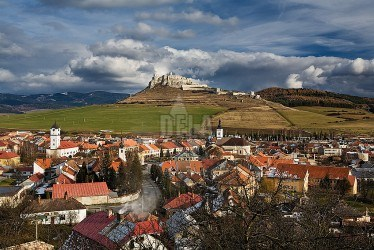

Spiššký hrad
História
V nadmorskej výške 634 m, na vápencovej skale prevyšujúcej okolitý terén o 200 m, vládne Spišskej kotline jedna z najcennejších pamiatok Spiša, národná kultúrna pamiatka Spišský hrad. Je nielen dokladom vývoja architektúry u nás od 12. do 18. storočia, ale svojou rozlohou prevyšujúcou 4 hektáre (presne 41 426 m2) sa považuje za jeden z najväčších hradných komplexov strednej Európy. Bohaté sú aj jeho dejiny. Skala, na ktorej sa rozprestiera, bola osídlená už v mladšej a neskorej dobe kamennej. Praveké osídlenie však vrcholí na prelome nášho letopočtu, keď sa tu vytvorilo obrovské a mohutné opevnené hradisko ľudu tzv. púchovskej kultúry. Jeho valy objavili archeológovia počas nedávneho archeologického výskumu. Našli tu však aj obydlia roľníckeho ľudu i remeselníkov a rozmerný kultový objekt. Z rozsahu, spôsobu opevnenia i z organizačnej štruktúry možno predpokladať, že už v tej dobe tu bolo administratívne centrum stredného Spiša. Valy, v teréne ešte znateľné, obklopovali celý hrad a prechádzali cez jeho najväčšie nádvorie. Po zániku tohto hradiska vzniklo na susednom kopci, na Dreveníku, ďalšie silné hradisko. Až po ňom sa začína budovať dnešný Spišský hrad.
Otváracie hodiny
- 1.1.2019 až 29.3.2019 Zatvorené
- 30.3.2019 až 18.4.2019 Pondelok až Nedeľa od 9,00 do 17,00 hod., posledný vstup o 16,00 hod.
- 19.4.2019 až 22.4.2019 Pondelok až Nedeľa od 9,00 do 19,00 hod., posledný vstup o 18,00 hod.
- 23.4.2019 až 30.4.2019 Pondelok až Nedeľa od 9,00 do 17,00 hod., posledný vstup o 16,00 hod.
- 1.5.2019 až 30.9.2019 Pondelok až Nedeľa od 9,00 do 19,00 hod., posledný vstup o 18,00 hod.
- 1.10.2019 až 31.10.2019 Pondelok až Nedeľa od 9,00 do 17,00 hod., posledný vstup o 16,00 hod.
- 1.11.2019 až 17.11.2019 Pondelok až Nedeľa od 9,00 do 16,00 hod., posledný vstup o 15,00 hod.
- 18.11.2019 až 31.12.2019 Zatvorené
VSTUP
8€ - Dospelí
6€ - Študenti 19-26 rokov a dôchodcovia
4€ - Deti 6-18 rokov
19€ - Rodinná vstupenka (maximálne 4 osoby, v kombinácii 1 dospelý a 3 deti alebo 2 dospelí a 2 deti)
0€ - Foto a Video.
Poznámka: Autom je prístup na bezplatné parkovisko vzdialené 10 minút pešej chôdze od brány hradu (príjazd smerom od Hodkoviec). Peší výstup zo Spišského Podhradia k hlavnej bráne trvá 1 hodinu.
Služby a ubytovanie
| Zariadenie | Typ | Ulica | Mesto | Telefón |
|---|---|---|---|---|
| Erika | Ubytovanie | Beharovce 41 | Beharovce | 0905/516319 |
| Milano | Ubytovanie | Granč-Petrovce 122 | Granč-Petrovce | 0908/893945 |
| Slovnormal | Turistická ubytovňa | Družstevná 170 | Granč-Petrovce | 0904/646027 |
| A+S Podzámok | Penzión | Podzámková 28 | Spišské Podhradie | 053/4541755 |
| Chalúpka | Penzión | Podzámková 25 | Spišské Podhradie | 0905/167003 |
| Kešeľák | Ubytovanie | Galova 77 | Spišské Podhradie | 0911/813502 |
| Sivá Brada | Turistická ubytovňa | Levočská cesta 13 | Spišské Podhradie | 0905/142240 |
| U Pacáka | Penzión | Mariánske námestie 33 | Spišské Podhradie | 0908/260379 |
Kontaktujte nás
Fax: +421-53-4512824
Email: info@spisskemuzeum.com
Adress: SNM-Spišské múzeum, Nám. Majstra Pavla 40, 054 01 Levoča